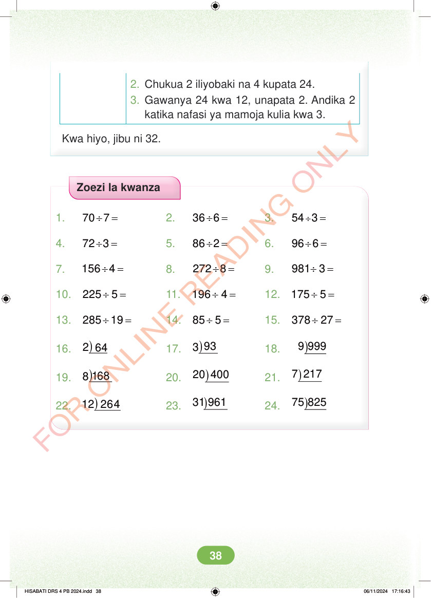

2. Chukua 2 iliyobaki na 4 kupata 24. 3. Gawanya 24 kwa 12, unapata 2. Andika 2 katika nafasi ya mamoja kulia kwa 3. Kwa hiyo, jibu ni 32. Zoezi la kwanza 1. ÷ = 70 7 2. ÷ = 36 6 3. ÷ = 54 3 4. ÷ = 72 3 5. ÷ = 86 2 6. ÷ = 96 6 7. ÷ = 156 4 8. ÷ = 272 8 9. ÷ = 981 3 10. ÷ = 225 5 11. ÷ = 196 4 12. ÷ = 175 5 13. ÷ = 285 19 14. ÷ = 85 5 15. ÷ = 378 27 16. ) 2 64 17. )93 3 18. ) 9 999 19. )168 8 20. ) 20 400 21. ) 7 217 22. ) 12 264 23. ) 31 961 24. ) 75 825 HISABATI DRS 4 PB 2024.indd 38 HISABATI DRS 4 PB 2024.indd 38 06/11/2024 17:16:43 06/11/2024 17:16:43